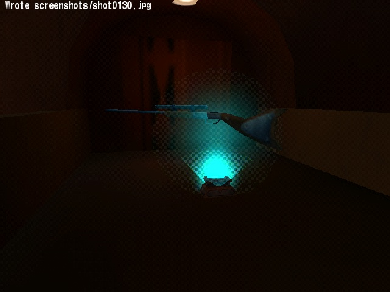
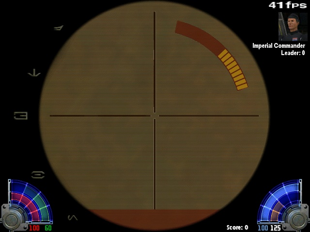
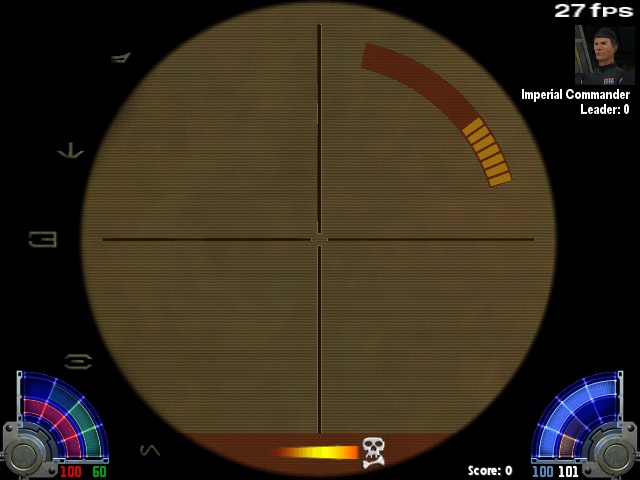
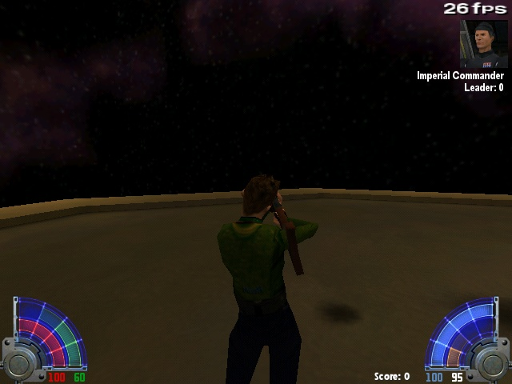
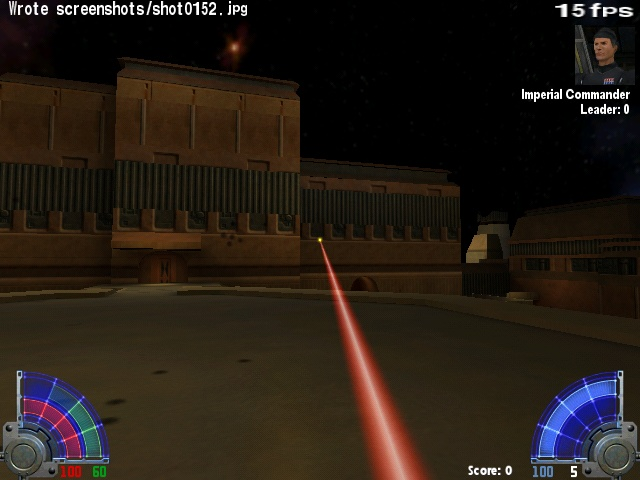

TUSKEN RIFLE MOD
NOT READY YET

TUSKEN RIFLE MOD
NOT READY YET
This mod gives you ability to play with Tuskens'
rifle.
It simply replaces models (disruptor to rifle).
New sounds and hud icons are included.
Flash effects are modified to yellow, like tuskens' rifle effects

Tusken rifle





1) I can't make this beam yellow
2) No FPP weapon view
If You can help, mail me 
I will include in readme file credits that You helped me very much!
You SHOULD mail me when You see some others bugs \ You have an idea...